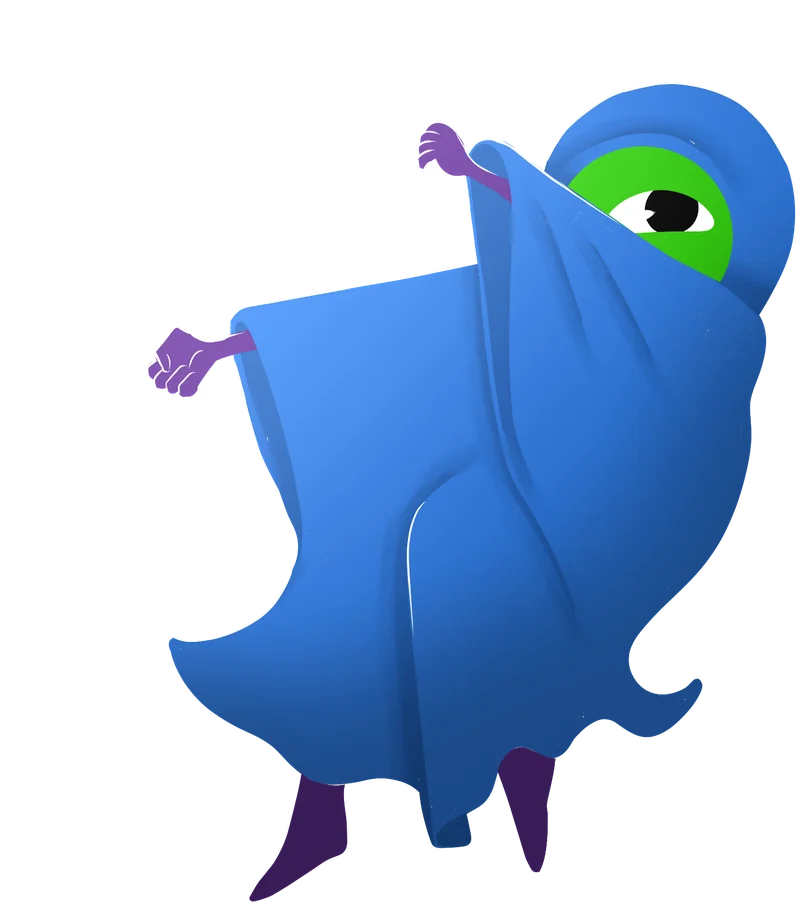
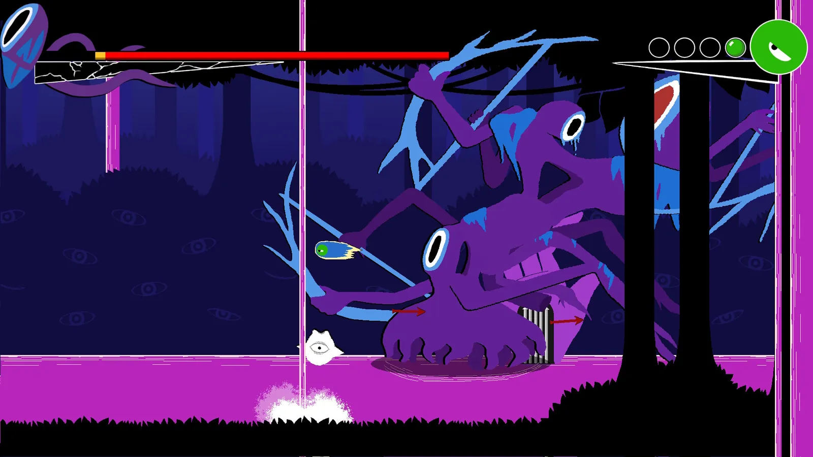
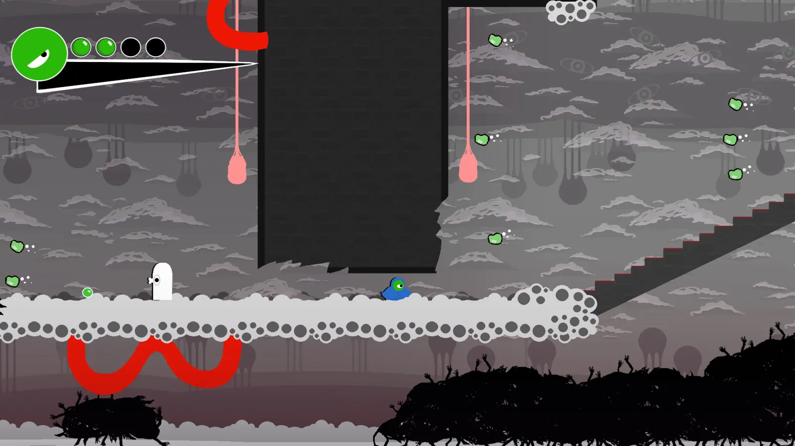
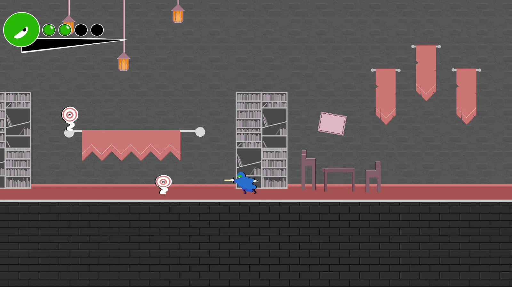

Cirne Glecre
Delinquent of the Dagger
Daggers
Dash
Favourite Attack
Dash

Favourite Shape
CORCLE

Favourite Colour
Blue
Ideal First Date
uNDEFINED

Ders & Cirne
Despite being one of Ders's pupils, Cirne still often rebels against their authority. However, Cirne still cares very much about Ders and wishes to connect with them as equals. As friends.
DersCirne & Trale
While Cirne originally didn't have a good first impression of Trale, the two hit it off and became lovers. But they had to swear to their duties once the Polygonal Entity emerged.
Trale